Thm-Web Application Security
最后更新时间:
文章总字数:
预计阅读时间:
0x01 Task1 introduction
我们每个人在计算机上使用不同的程序。一般来说，程序在我们的计算机上运行，利用计算机的处理能力和存储空间。此外，要使用程序，我们需要先安装它。如果我们无需安装就可以使用任何程序怎么办？
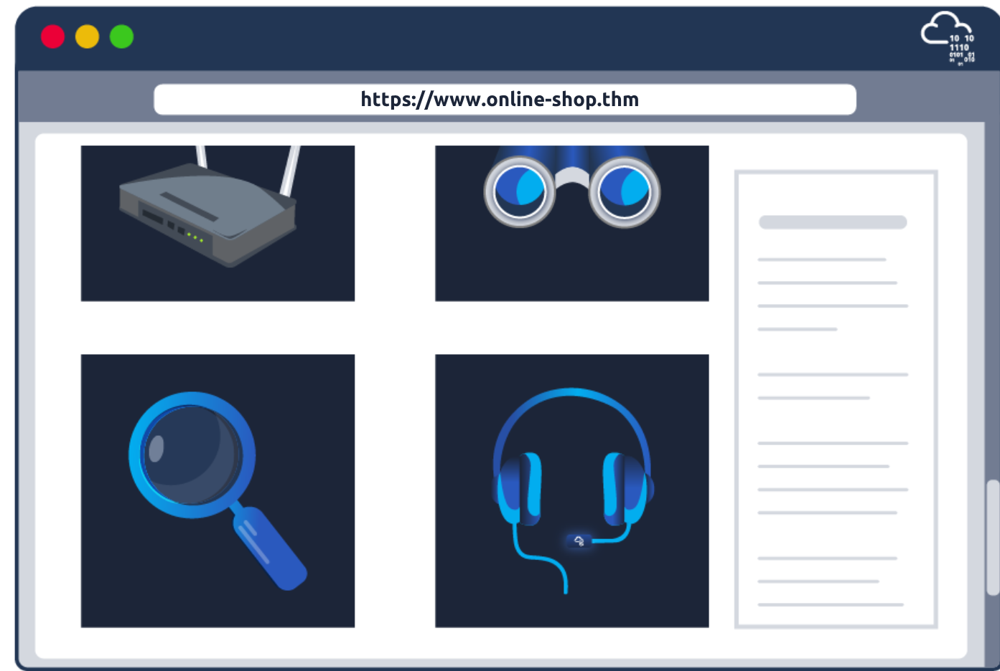
Web 应用程序就像一个“程序”，只要我们有现代标准的 Web 浏览器（例如 Firefox、Safari 或 Chrome），我们就可以无需安装即可使用。因此，您无需安装您需要的每个程序，而只需浏览相关页面即可。以下是一些 Web 应用程序示例：
-
网络邮件，例如 Tutanota、Protonmail、Outlook 和 Gmail
-
在线办公套件，例如 Microsoft Office 365（Word、Excel 和 PowerPoint）、Google Drive（文档、表格和幻灯片）和 Zoho Office（Writer、Sheet 和 Show）
-
在线购物，例如 Amazon.com、AliExpress 和 Etsy
还有数千个示例提供了无数的服务。其他示例包括网上银行、汇款、天气预报和社交媒体。
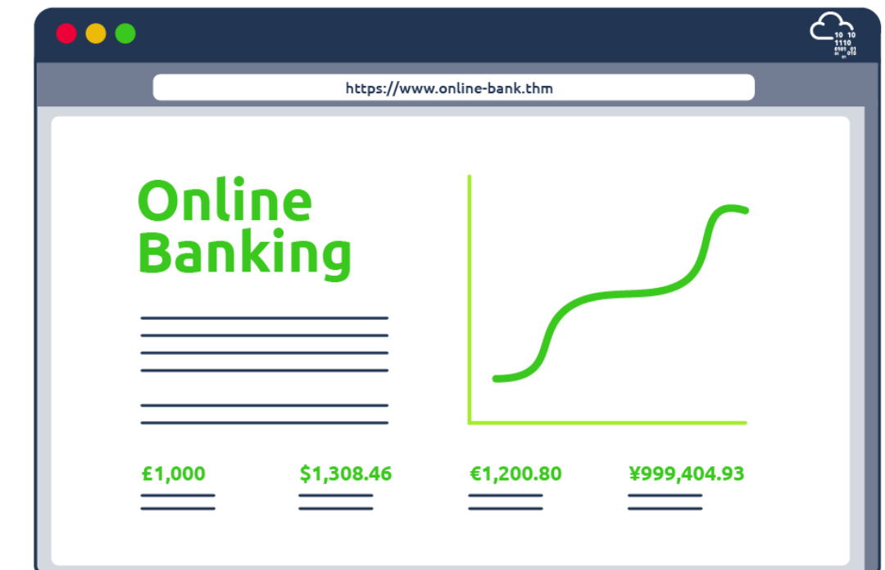
Web 应用程序的思想是它是一个在远程服务器上运行的程序。服务器是指连续运行以“服务”客户端的计算机系统。在这种情况下，服务器将运行可以通过网络浏览器访问的特定类型的程序。
考虑一个在线购物应用程序。 Web 应用程序将从数据库服务器读取有关产品及其详细信息的数据。数据库用于以有组织的方式存储信息。示例包括有关产品、客户和发票的信息。数据库服务器负责许多功能，包括读取、搜索和写入数据库。在线购物 Web 应用程序可能需要访问多个数据库，例如：
- 产品数据库：该数据库包含有关产品的详细信息，例如名称、图像、规格和价格。
- 客户数据库：包含与客户相关的所有详细信息，例如姓名、地址、电子邮件和电话号码。
- 销售数据库：我们希望在这个数据库中看到每个客户购买了什么以及他们如何支付。
我们已经可以看到任何在线购物系统中存储的信息量。假设攻击者设法利用（破解）Web 应用程序并窃取客户的数据库。在这种情况下，这将给公司及其客户带来重大损失。
下图显示了在在线购物网站上搜索商品的情况。在最简单的版本中，搜索将采取四个步骤：
- 用户在搜索字段中输入项目名称或相关关键字。网络浏览器将搜索关键字发送到在线购物网络应用程序。
- Web 应用程序在产品数据库中查询（搜索）提交的关键字。
- 产品数据库将与所提供的关键字匹配的搜索结果返回给Web应用程序。
- Web 应用程序将结果格式化为友好的网页并将其返回给用户。
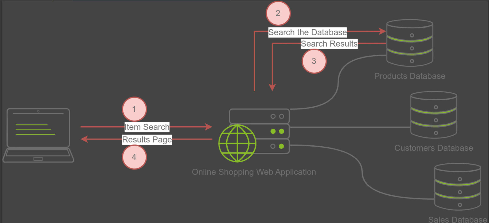
从用户的角度来看，他们只会访问一个优雅的在线商店，其中所有的技术基础设施都被隐藏。
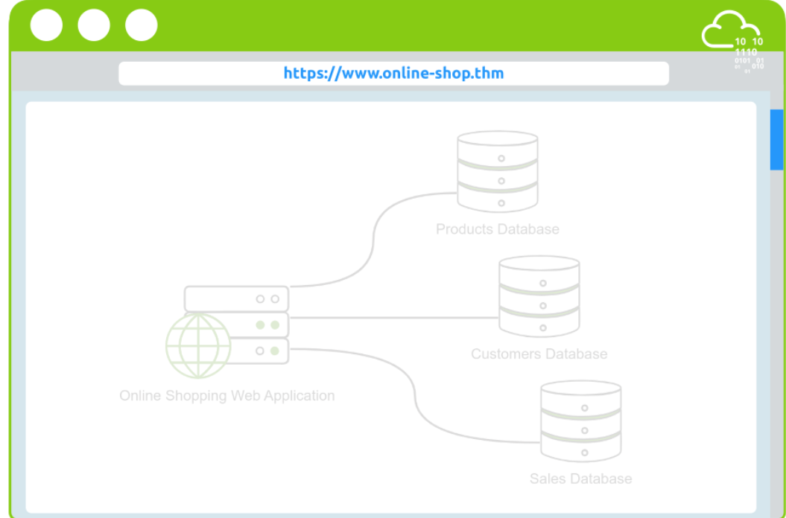
许多公司提供错误赏金计划。错误赏金计划允许公司向发现公司系统中安全漏洞（弱点）的任何人提供奖励。主要条件是发现的漏洞在漏洞赏金范围和规则之内。其中，谷歌、微软和 Facebook 都有漏洞赏金计划。发现错误可以为您带来几百美元到数万美元的收入，具体取决于漏洞的严重程度，即您发现的弱点。
问题一：
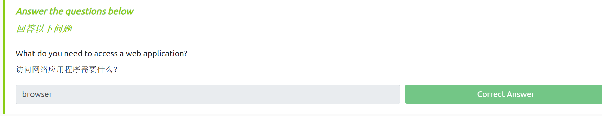
0x02 Task2 Web Application Security Risks
假设您想从网上商店购买商品。您希望在此 Web 应用程序上能够执行某些功能。最直接地，在线订单可能如下：
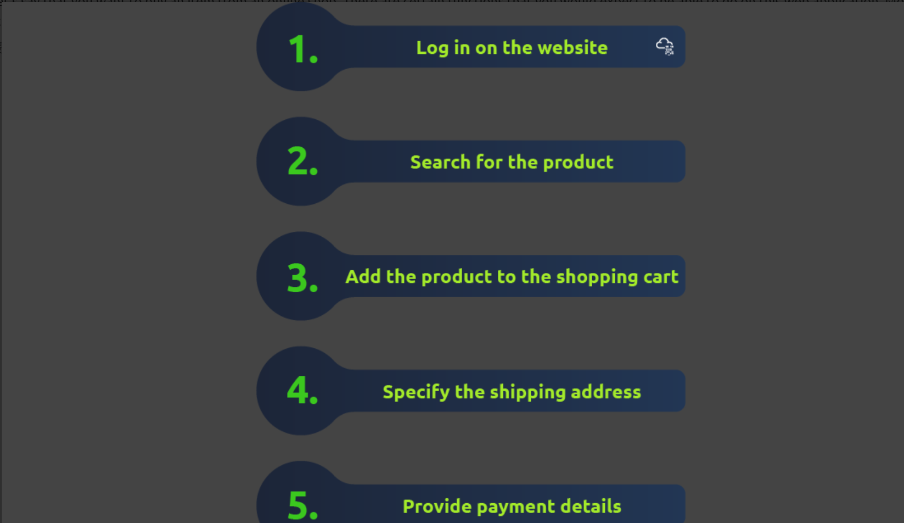
针对 Web 应用程序的常见攻击有几个主要类别。考虑以下步骤和相关攻击。
- 登录网站：攻击者可以通过尝试许多单词来尝试发现密码。攻击者会使用一长串密码和自动化工具来针对登录页面进行测试。
- 搜索产品：攻击者可以通过在搜索词中添加特定字符和代码来尝试破坏系统。攻击者的目标是让目标系统返回不应该返回的数据或执行不应该执行的程序。
- 提供付款详细信息：攻击者会检查付款详细信息是否以明文形式发送或使用弱加密发送。加密是指在不知道密钥或密码的情况下使数据不可读。
我们无法涵盖所有内容，但我们将介绍 OWASP 前十名中的一些正式类别。如果这些技术对您来说听起来很陌生，请不要担心； TryHackMe 将引导您解决每个漏洞。
Identification and Authentication Failure-身份验证失败
识别是指唯一识别用户的能力。相反，身份验证是指证明用户就是他们声称的那个人的能力。网上商店必须确认用户的身份并进行身份验证，然后才能使用该系统。然而，这一步很容易出现不同类型的弱点。弱点示例包括：
- 允许攻击者使用暴力，即通常使用自动化工具尝试许多密码来查找有效的登录凭据。
- 允许用户选择弱密码。弱密码通常很容易被猜到。
- 以纯文本形式存储用户的密码。如果攻击者设法读取包含密码的文件，我们不希望他们能够了解存储的密码。
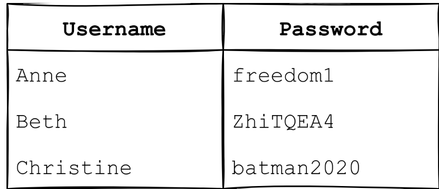
Broken Access Control-访问控制损坏
访问控制确保每个用户只能访问与其角色或工作相关的文件（文档、图像等）。例如，您不希望营销部门的人员访问（阅读）财务部门的文档。与访问控制相关的示例漏洞包括：
- 未能应用最小权限原则并给予用户超出其需要的访问权限。例如，在线客户应该能够查看商品的价格，但他们不应该能够更改价格。
- 能够使用其唯一标识符查看或修改其他人的帐户。例如，您不希望一个银行客户能够查看另一客户的交易。
- 能够以未经身份验证的用户身份浏览需要身份验证（登录）的页面。例如，我们不能让任何人在登录之前查看网络邮件。
Injection-注入
注入攻击是指 Web 应用程序中的漏洞，用户可以在其中插入恶意代码作为其输入的一部分。该漏洞的原因之一是缺乏对用户输入的适当验证和清理。
Cryptographic Failures-加密失败
此类别是指与密码学相关的失败。密码学专注于数据的加密和解密过程。加密将明文打乱成密文，这对于任何没有解密密钥的人来说都是胡言乱语。换句话说，加密可确保任何人在不知道密钥的情况下都无法读取数据。解密使用密钥将密文转换回原始明文。加密失败的示例包括：
- 以明文形式发送敏感数据，例如使用 HTTP 而不是 HTTPS。 HTTP 是用于访问 Web 的协议，而 HTTPS 是 HTTP 的安全版本。其他人可以读取您通过 HTTP 发送的所有内容，但不能读取 HTTPS。
- 依赖弱密码算法。一种古老的加密算法是将每个字母移动一位。例如，“TRY HACK ME”变成“USZ IBDL NF”。这种加密算法很容易破解。
- 对加密函数使用默认或弱密钥。破解使用
1234作为密钥的加密并不具有挑战性。
如果这些技术一开始看起来具有挑战性或复杂，请不要担心。 TryHackMe 拥有专门的深入室来帮助您了解和试验针对 Web 应用程序的各种攻击。
问题二：
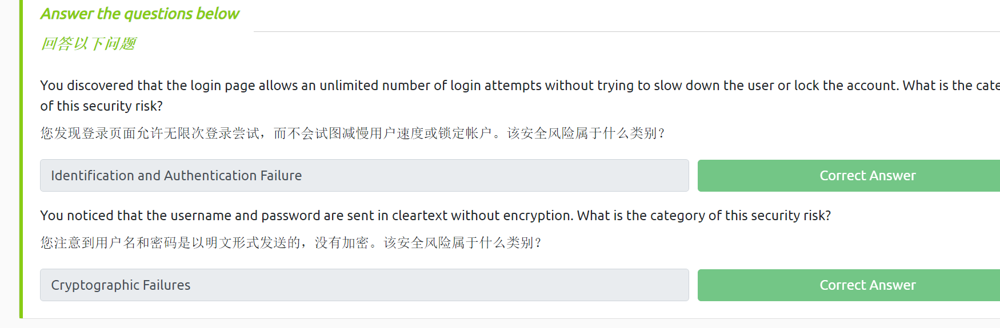
0x03 Task3 Practical Example of Web Application Security
此任务将调查使用不安全直接对象引用 (IDOR) 的易受攻击的网站。 IDOR 属于损坏的访问控制类别。访问控制被破坏意味着攻击者可以访问信息或执行不适合他们的操作。考虑这样的情况：Web 服务器接收用户提供的输入来检索对象（文件、数据、文档），并且它们按顺序编号。假设用户有权访问名为 IMG_1003.JPG 的照片。我们可能会猜测还有 IMG_1002.JPG 和 IMG_1004.JPG ；然而，即使我们知道了它的名称，Web 应用程序也不应该向我们提供该图像。一般来说，如果对该输入数据过于信任，则可能会出现 IDOR 漏洞。换句话说，Web 应用程序不会验证用户是否有权访问所请求的对象。
此任务将调查使用不安全直接对象引用 (IDOR) 的易受攻击的网站。 IDOR 属于损坏的访问控制类别。访问控制被破坏意味着攻击者可以访问信息或执行不适合他们的操作。考虑这样的情况：Web 服务器接收用户提供的输入来检索对象（文件、数据、文档），并且它们按顺序编号。假设用户有权访问名为 IMG_1003.JPG 的照片。我们可能会猜测还有 IMG_1002.JPG 和 IMG_1004.JPG ；然而，即使我们知道了它的名称，Web 应用程序也不应该向我们提供该图像。一般来说，如果对该输入数据过于信任，则可能会出现 IDOR 漏洞。换句话说，Web 应用程序不会验证用户是否有权访问所请求的对象。
仅为用户或产品提供正确的 URL 并不一定意味着用户应该能够访问该 URL。例如，考虑产品页面 https://store.tryhackme.thm/products/product?id=52 。我们预计此 URL 会提供有关产品编号 52 的详细信息。在数据库中，项目将按顺序分配编号。攻击者会尝试其他数字，例如 51 或 53 而不是 52 ；如果 Web 应用程序存在漏洞，这可能会泄露其他已退役或未发布的产品。
让我们考虑一个更关键的例子； URL https://store.tryhackme.thm/customers/user?id=16 将返回带有 id=16 的用户。同样，我们希望用户拥有连续的 ID 号。攻击者会尝试其他号码并可能访问其他用户帐户。此漏洞可能适用于顺序文件；例如，如果攻击者看到 007.txt ，攻击者可能会尝试其他数字，例如 001.txt 、 006.txt 和 008.txt 。同样，如果您的 ID 号为 16，而 ID 号为 17 的是另一个用户，则通过将 ID 更改为 17，您可以看到属于另一个用户的敏感数据。同样，他们可以将 ID 更改为 16 并查看属于您的敏感数据。 （当然，我们在这里假设系统容易受到 IDOR 的攻击。）
问题三：
单击“查看站点”，让我们看看它的实际效果。您将看到一个显示库存管理系统的页面。
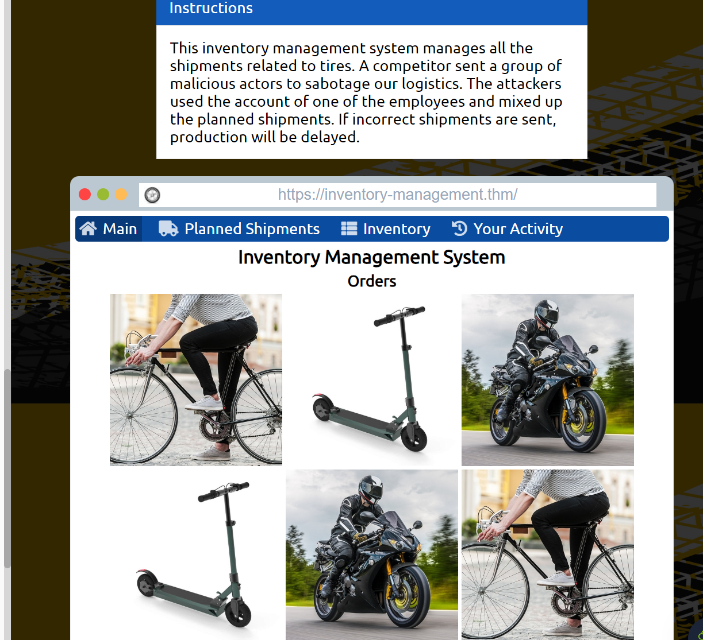
被攻击的信息：
1 | |
这里说使用了其中一名员工的账号，我们先根据提示看一下"计划发货"选项
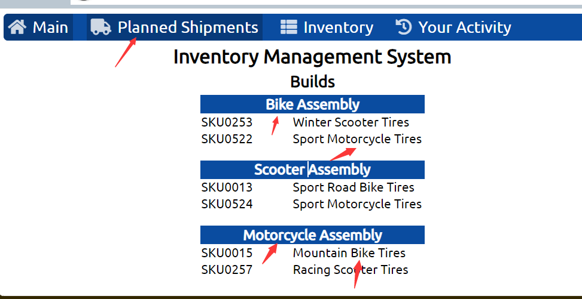
1 | |
如上图可以看到发货信息已经不匹配了，这意味着我们需要将其恢复一下，接下来在查看Your activity
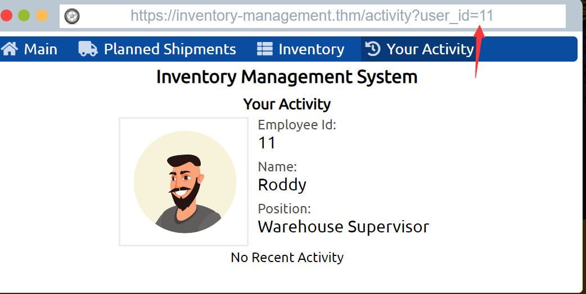
这里展示员工信息，我们可以修改上述id值来尝试查看其他的员工信息，这代表着存在IDOR漏洞

在9处我们发现了一些不同，这里似乎就是攻击者修改发货信息的地方，我们可以点击revert恢复原有配置
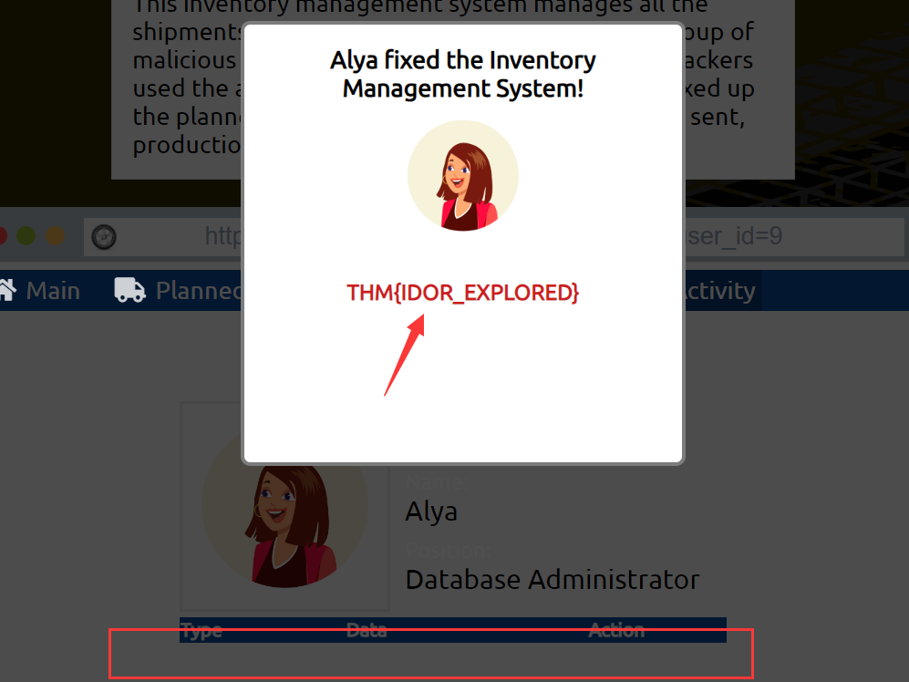
如上图，单击完成后发现我们得到了flag，提交即可
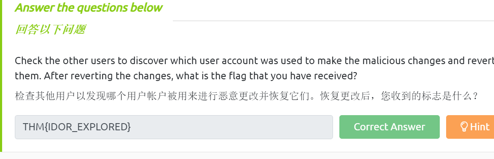